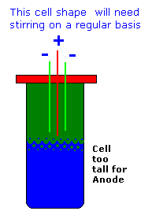

| Cell Design |
The amateur will be using (probably) a non pH controlled cell, this is OK. All industrial setup's use pH control.
The amateur will probably use what is to hand which may be a cheap power supply, cheap Gouging rods etc. The cell container can come in the form of a bucket with a lid.
The plastic that the bucket is made from must be able to withstand the cell electrolytes and fumes. A PVC bucket is ideal. Some holes are drilled in the lid to accommodate the electrodes and a vent tube.
The vent tube is useful as it allows gasses to be vented out of the building in a controlled manner. A hole about 5cm in diameter is also made in the lid for looking into the cell and also for adding water or NaCl solution as required. A piece of plastic is needed for to cover this hole and stop fumes and mist from getting out of the cell onto connections etc.
The electrodes should be sealed into the lid because if fumes and mist are getting on connections you will have problems trying to maintain them. Also gases coming to the surface of the solution generate
a mist of the solution which
will drift out of the cell. This mist will rust and corrode all metal objects in the vicinity of the cell and beyond!.
The design parameter that always raises it's head is the Anode current density. This parameter is important because you must keep below a certain Anode current density to avoid eroding the Anode excessively. This is particularly true with Graphite. Anode current density is the Anode current (cell current) divided by the total surface area of the Anode which is in the electrolyte. It is usually quoted in Amps per square cm. When you have decided what the Anode surface area will be and what the current density on the Anode will be, you will know what the maximum current through your cell can be. You do not have to run this maximum, you can run less current into the cell if you so wish but.
Another design parameter that gets discussed is the ratio of the size of the cell (the liquid volume) to the current going into the cell. This in not a critical parameter. It has little effect on current efficiency. When the current going into the cell is raised (if you add more Anodes say and adjust power supply) and the cell volume is kept constant in order to shorten the run time of the cell, there will come a point where the heat generated by the process will not be able to escape fast enough from the cell and the temperature of the cell will be too high. If you must run a large current into a small volume of electrolyte you can keep the cell cool by putting it into a large container of water. Industrial setup's uses cells that are small in relation to the current going into them. They use cooling coils in the cells to keep the cell cool and transport heat away. This keeps the real estate used by the cells small. The amateurs cells can be large in comparison to the current going into them. The only disadvantage in doing this is that the run times of the cells can be long. This can leave the impatient amateur feeling as if nothing is happening at all as he is forced to wait perhaps two weeks before he can take out a crop of Chlorate. The cells WILL still be making Chlorate at the same rate as a smaller cell with the same current going into it.
The amateur very often comes up with some weird and wonderful arrangement of electrodes for to stop Chlorine gas escaping from the cell. It should be noted in industry that most cells use a very simple arrangement of parallel plates in a vertical arrangement. With the Amateur cell the pH is not controlled. It is impossible for Chlorine gas to escape out of a cell which has a high pH (Amateur cell). There will be a smell of Chlorine at the start but once the pH rises no Chlorine of any significance will come out of the cell. Add NaOH or KOH at start if there is a problem regarding smell of Cl2.
The temperature of the cell (IMO) is of little importance to current efficiency in non pH controlled set up. All Chlorate is made by electricity (not by species meeting in the bulk of the electrolyte as you have in pH controlled setup's) with little or no bulk chemical reactions going on. Temperature should be kept at a level so that Anodes are not damaged/eroded. Very low temperatures may cause Na or K Chloride to come out of solution.
The power supply for to supply the cell with this current will ideally be a controlled
current source. With a controlled current source you set the power supply to put a certain current
into the cell and the voltage across the cell will vary as the cell resistance varies.
Most power supplies for sale or to hand are NOT controlled current sources. They are
controlled voltage sources (either fixed or variable).
This means that when you connect the supply to the cell the Voltage
across the cell in rock steady at whatever the Voltage of the supply is set at (assuming the supply is not being abused) and the current put into the
cell is dictated by that (rock steady) Voltage and the resistance of the cell.
If the supply has a variable Voltage
output then the current can be varied by lowering or raising the Voltage of the supply.
When the power supply is a fixed voltage
output (you cannot vary the Voltage with a knob. An example is a computer power supply) then the only way you can vary the current is by
manipulating the electrodes in the cell or you could add a resistor or a number of diodes in series with the line going into the
cell to lower the current. With a computer supply (5 Volts output) the current going into the cell will
probably be within acceptable limits. If you have a fixed 10 or 12 volt supply then the current will
probably be excessive and you will need a resistor or diodes to limit current. Diodes work by dropping 0.9 Volts across themselves, they effectively lower the power supply voltage seen by the cell by approx. 0.9 Volts. Another trick with a 12 volt supply, is to put two cells in
series so that less current will flow into each cell.
12 Volt battery chargers can make an acceptable supply as they tend to have controlled current characteristics.
They are a half way house between a controlled current source and a controlled Voltage source.
You will need a current meter in the line going into your cell (or in the power supply itself) in order
to measure current. Voltage across cell can also be noted with a meter if desired.
Do not get obsessed with the Voltage across the cell. The voltage across the cell will have a value no doubt. Some folks are inclined to latch onto the voltage appearing across the cell as if it were some very important, almost magical, parameter. Some times you will hear a statement like: "I ran my cell at 3.6 volts, therefore I was making Chlorate. I increased the voltage to 7.4 volts and I am now making Perchlorate". It is NOT the Voltage across the cell that decides if you are making Chlorate or Perchlorate. If the Voltage is too low not enough current will get pumped into the cell. This will give you slow production. If you have a bad connection which causes a large Voltage drop this will lower current going into the cell too.
|  |
Cell shapeThe shape of cell is not very critical but do not place a short Anode/Cathode unit into a deep cell as the bottom half of the electrolyte will not take place in the action as it will be cold and will remain unmixed. A tall cell will need regular stirring.If running a K cell it can be advantageous to have space at the bottom of the cell for K Chlorate to accumulate. You could allow perhaps one Cathode to go to the cell bottom for stirring as the H gas coming from the Cathode will keep the cell agitated. Having over sized Cathodes is not very wise either as it encourages unwanted reduction reactions. |
There is further information and some long winded discussions on general cell design here.
There is description of a continuous K Chlorate production cell here from Carl Tauch (taken from pyrobin files without permission!).
HIT THE BACK BUTTON ON YOUR BROWSER